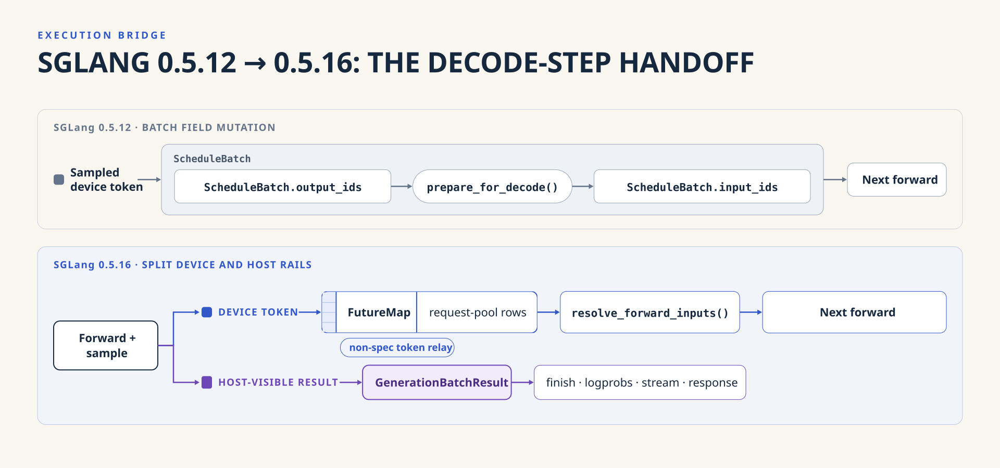
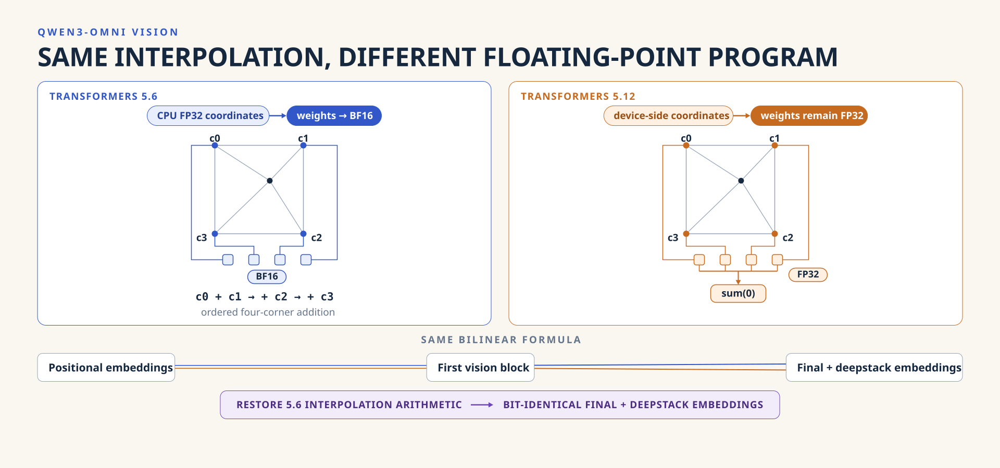
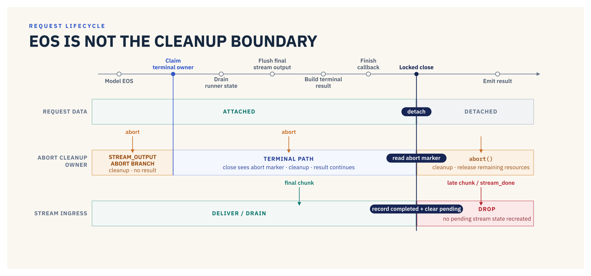

From API Alignment to Floating-Point Associativity: Upgrading SGLang Omni's Backbone
Not long ago, we upgraded the SGLang Backbone that SGLang Omni depends on from 0.5.12.post1 to 0.5.16. The usual expectation is that you only need to fix renamed APIs, update the integration code, and you're done. In the end, though, the change was catastrophic in scale: it crossed six SGLang releases, moved Transformers from 5.6.0 to 5.12.1, and eventually touched 162 files in PR #1183.
PS: From my personal sense of engineering aesthetics, SGLang Omni would ideally sit as a thin upstream abstraction over SGLang—using it as a black box, without even pinning to any specific version. Much like what we hope for in slime and miles: agree on SGLang's downstream interface, protect it with SGLang's CI, and stay able to track the latest SGLang at any time. Unfortunately, most upstream frameworks invasively modify their downstream dependencies, which forces us to pin a concrete SGLang version and then patch that version's interfaces. Every such upgrade is really just resetting those version-specific invasive patches onto a newer release.
The upgrade PR's diff was enormous. As I said above, SGLang Omni can hardly be just a thin, simple wrapper around SGLang: it owns a multi-stage pipeline, parts of the scheduler loop, model-runner integration, streaming state, and process-placement logic. The runtime contract between the two systems is far more than one or two core interfaces can protect. Scheduler compatibility requires a stable execution protocol; Qwen3-Omni requires preserving the order of floating-point operations; and once MOSS stages are merged into the same process, GPU memory must be accounted for in construction order—you can no longer treat a process budget as a timeless number...
These issues made up the nightmare of this upgrade, and they are why we are reflecting here in the hope that future upgrades can be lighter.
Why This Upgrade Was More Than an API Change
The previous pinned upgrade, PR #698, moved SGLang from 0.5.8 to 0.5.12.post1. It was not a small change: it updated Transformers and PyTorch, repaired model-specific assumptions, and adapted request-pool, sampling, output-type, device, and CUDA dependencies. Its center of gravity, however, remained at the integration edges. It did not materially rewrite Omni's scheduler or its base model-runner execution path.
PR #1183 crossed a different boundary. SGLang 0.5.16 changed how a batch is selected, how the live scheduler batch becomes a model input, and how a sampled token reaches the next iteration. Because Omni owns the surrounding event loop instead of calling SGLang's scheduler unchanged, those were not implementation details hidden behind an API. They were part of Omni's execution path.
That distinction matters more than the raw diff size. PR #698 mostly repaired callers after upstream interfaces moved. PR #1183 had to re-establish an execution protocol that Omni partially implements itself. The numerical, lifecycle, and memory-accounting failures later in this article are different forms of the same underlying problem: the integration depends on behavior that is real and necessary, but not expressed through one stable interface.
How SGLang 0.5.16 Changed the Decode-Step Handoff
The clearest way to understand the scheduler change is to follow one ScheduleBatch across two decode iterations.
In SGLang 0.5.12, Scheduler.get_next_batch_to_run() read and mutated scheduler-owned fields such as self.running_batch and self.last_batch, then returned the ScheduleBatch to execute. Before the model forward, that scheduler batch was converted into a separate ModelWorkerBatch, which ForwardBatch.init_new() consumed.
After sampling, the scheduler wrote the device-side token tensor back onto the live scheduler batch as batch.output_ids. When the batch entered its next decode iteration, ScheduleBatch.prepare_for_decode() moved that tensor into batch.input_ids and cleared output_ids.
SGLang 0.5.16 uses a different ownership model. get_next_batch_to_run(running_batch, last_batch) returns a NextBatchPlan, and the caller explicitly replaces its running batch with the plan's result. ForwardBatch.init_new() consumes the live ScheduleBatch directly rather than receiving a detached ModelWorkerBatch.
The sampled token no longer travels through ScheduleBatch.output_ids. Before a forward, resolve_forward_inputs() materializes the current input from scheduler staging or from a FutureMap. After sampling, the next device token is stashed in that map under the request-pool rows. The live batch clears input_ids, and the following iteration resolves those rows back into its input.

FutureMap is not carrying speculative-decoding state in this Omni path. The bridge rejects speculative decoding and creates the map with the non-speculative algorithm. Here, the map is the ordinary device-token relay used by SGLang's 0.5.16 non-overlap execution path; only its speculative extras remain unused.
This split also separates two results that used to appear interchangeable. The device token needed by the next forward remains on the GPU relay, while the CPU-visible values used for finish detection, logprobs, streaming, and responses stay in GenerationBatchResult. Filtering or retracting a live batch can change its request rows before the next iteration, so retaining the old output_ids → input_ids shortcut would attach token state to a stale view of the batch.
SGLang's own Scheduler.run_batch() performs this protocol, but Omni does not call that loop unchanged. It has a multi-stage event loop and model-specific runners around the forward. The upgrade therefore introduced one SGLangExecutionBridge that resolves current inputs, enters the required forward context, publishes the next tokens, and records completion. Model runners use that bridge instead of maintaining separate copies of the old scheduler contract.
The compatibility problem was therefore not a set of renamed classes. SGLang changed who owns the live batch, where the next token resides between iterations, and when forward inputs may be reconstructed. Omni had to adopt that dataflow, not merely its method signatures.
A Few Floating-Point Operations Changed Qwen3-Omni
Once the scheduler path was working, Qwen3-Omni presented a more deceptive failure. The model started successfully and accepted the same requests, but its MMMU result had regressed. That kind of failure is easy to misattribute to preprocessing, image resizing, tokenizer changes, model weights, rotary positions, or general GPU nondeterminism, so we compared the two stacks layer by layer.
The inputs were identical. input_ids, attention masks, pixel values, image-grid metadata, patch-embedding output, and rotary position IDs all matched. The first difference appeared after positional embeddings entered the vision encoder, and it propagated through the first vision block into the final and deepstack image embeddings. Across seven real samples, the maximum absolute difference in the final image embeddings ranged from roughly 0.156 to 0.359.
The underlying change was only a few floating-point operations. Transformers 5.6 constructed bilinear-interpolation coordinates with CPU FP32 behavior, converted the interpolation weights to the positional-embedding table's dtype—normally BF16—and combined the four corner embeddings in an explicit order:
corners = pos_embed(indices) * weights[:, :, None]
result = corners[0] + corners[1] + corners[2] + corners[3]
Transformers 5.12 moved the calculation into a shared path. It generated the interpolation state differently, retained FP32 weights during multiplication, and reduced the four corners with a sum. Both implementations describe the same bilinear interpolation mathematically, but BF16 multiplication and addition are not associative. Changing the intermediate dtype and accumulation order changed the positional embeddings seen by the pretrained vision tower.

The fix was deliberately local. Qwen3OmniMoeVisionEncoderCompat retains the Transformers 5.12.1 encoder structure, decorators, output type, vision blocks, and deepstack behavior. It replaces only the interpolation arithmetic with the 5.6 sequence used by the checkpoint's original stack. After that change, preprocessing tensors, captured intermediate vision tensors, final embeddings, and deepstack embeddings were bit-identical to the reference; the 50-sample MMMU gate recovered to 31/50, or 62%.
This was the clearest result of the entire upgrade. For a pretrained model, compatibility includes the floating-point program that interprets its weights. A dependency can preserve every public API and tensor shape while changing the model numerically through device placement, fusion, reduction order, or intermediate precision.
EOS Did Not Mean the Request Was Finished
The scheduler review also surfaced a pre-existing lifecycle problem. It was not caused by SGLang 0.5.16, but the scheduler rewrite made it impossible to ignore safely. Omni attached model-specific request data to the SGLang request, while that request data held a reference back to the request:
Req → Omni Request Data → Req
For TTS and omni models, the request data can retain reference audio, input embeddings, hidden states, streaming buffers, and model-specific decode state. Leaving the cycle intact means ordinary reference counting cannot release it at terminal time; Python's cyclic collector must discover it later. Clearing the link sounds trivial until we consider what “terminal” means in a multi-stage pipeline.
An autoregressive request can finish while an upstream stage still has a stream chunk in flight. The same request may remain visible through the running batch, the just-completed batch, an asynchronous pending step, and a stream-ingress buffer. If request data is detached before the model runner flushes its final buffered audio, the final chunk can be lost. If it is detached before in-flight stream ingress settles, a late chunk can be mistaken for pre-admission data and retained in a pending structure. If an abort arrives while normal terminalization is already cleaning the request, both sides can either run the model cleanup or assume the other side will do it.
The final scheduler code treats terminalization as an ownership handoff rather than a pointer clear. Under the request-admission lock, normal completion claims the request so that only one path performs terminal output. It then asks the model runner to flush remaining stream state, constructs the terminal result, runs the model-specific finish callback, and only then detaches the Omni request data and records the request as completed. Stream chunks arriving after that boundary are dropped instead of recreating pending state. Abort uses the same lock: if it arrives before detach, terminalization observes it and completes abort cleanup; if it arrives after detach, the abort path knows there is no terminal owner left and performs the cleanup itself.

The important property is not that every terminal path calls the same helper. It is that the lock and the data attachment together identify exactly one cleanup owner for both possible interleavings. This is visible in the final stream_output path: final stream data is drained before detachment, while completion recording closes the request against later ingress.
This is a recurring problem in multi-stage serving. “The model generated EOS” and “the pipeline has finished with this request” are different events. Cleanup belongs at the second boundary, and that boundary has to be derived from all concurrent owners rather than guessed from the model's finish flag.
Why the Merged MOSS Pipeline OOMed
MOSS-TTS Local exposed a different ownership mistake. Its default topology assigns GPU fractions to preprocessing, the autoregressive engine, and the vocoder:
preprocessing 0.15
AR engine 0.67
vocoder 0.18
When those stages run in separate processes, a stage fraction and its process fraction are the same. When an operator merges the vocoder into the pipeline process, the declared cumulative budget for the complete process becomes 1.0. This is not SGLang's mem_fraction_static; it represents the sum of the stage budgets after every model in that process has been loaded. Our first implementation passed that final total to the autoregressive engine while it was profiling memory for the KV cache.
The arithmetic looked reasonable and was wrong. Stages are constructed sequentially: preprocessing is loaded first, then the AR engine allocates its weights and KV cache, and only afterward is the vocoder constructed. Giving the AR engine the final 1.0 budget allowed it to allocate memory belonging to a stage that did not exist yet. On the H100 run, it calculated about 66.22 GiB as available for KV; when the vocoder later requested another 942 MiB, only around 442 MiB remained and startup failed.
The correct value at each construction point is the prefix of the final process budget. Preprocessing sees 0.15; after adding the AR engine, the declared cumulative budget is 0.15 + 0.67 = 0.82; only after the vocoder is loaded does that cumulative budget reach 1.0. The final implementation computes those prefix totals in stage-construction order and injects the appropriate value into each factory that performs process-scoped memory profiling. The implementation is small enough to read directly in _attach_process_memory_fraction_defaults.
With 0.82, the AR engine sized the KV allocation at approximately 51.89 GiB. Once the vocoder finished loading, the complete process used 73.44 GiB against its final 79.65 GiB budget, and the previously failing merged topology served a valid request.
This issue is easy to describe as “reserve memory for the vocoder,” but that framing misses the useful design principle. A process budget is phase-dependent when the process is assembled incrementally. Placement fractions describe the final topology; memory profiling needs the fraction represented by objects that have been loaded up to the current construction point. The scope of the measurement and the scope of the budget must match.
Did the Version Bump Really Cause the Higgs Regression?
MOSS OOMed because the branch changed a topology and the memory accounting no longer matched it. Higgs was harder. The branch where we saw the failure turned out not to be the branch that produced it, and we spent most of a day inside the wrong code before we believed that.
What made it take that long is that the failure gave us almost nothing to go on. The server came up, both workers took their share of the requests, and every request finished at the worker that received it. Only the timing was wrong: Higgs TTS stage-1 came back at 5.046 req/s with a mean latency of 3.114 s, against gates of 13.64 req/s and 1.10 s. That is 37% of the pass threshold, and 28% of the 18.189 req/s the same benchmark had recorded at calibration time.
Because this was the first full run after the SGLang change, we went looking in the new execution path, and for a while the profiles seemed to agree with us. An Nsight Systems trace counted 34,721 CUDA stream synchronizations. py-spy kept landing on per-token CUDA Graph buffer resets and sampling parameters being copied back to the host. Those were real problems, and fixing them cleaned up token handoff, FutureMap ownership, WAR events, and CUDA Graph execution. They bought back almost none of the missing throughput. The benchmark stayed near 5 req/s.
So we stopped editing the new code and went back to the old pin, on the theory that if 0.5.12.post1 could still reach 18 req/s, the upgrade owned the loss, and if it could not, something else did.
The way to run that test is to hold the Omni code still and swap only the SGLang version beneath it. For the Omni side we used the commit the bump branch had been cut from, since that was the last state of main before the upgrade work. The two runs came back at 4.663 and 4.636 req/s, and for a short while we read that as the upgrade being innocent and Higgs having always been this slow. But we had held the wrong thing still. Whatever cost us the throughput was already sitting in that commit, so it was present in both runs, and swapping SGLang underneath it was never going to show it to us.
That reframed the search. Instead of asking what the upgrade broke, we asked when Higgs had last been fast, and bisected the Omni commits between that point and the branch. The answer was PR #1071, merged on July 21, three days before the version-bump work started. On the same GPU, with the same SGLang pin, the benchmark gave us 9.318 req/s on its parent commit and 4.664 on #1071.
That PR moved the Higgs vocoder into its own process. On the CI machine the autoregressive engine and the vocoder still shared one H100, but they now held two CUDA contexts, and without MPS the GPU time-sliced between them instead of overlapping their work. A controlled A/B that changed only the vocoder process placement reproduced the regression: moving the vocoder out of process reduced throughput by 55%. Sixteen concurrent requests divided by the 3.11 s mean latency accounts for the whole 5.046 req/s, so nothing was being dropped; the time the two contexts spent waiting for each other came back to us as latency.
What let it land in the first place is that nobody had run this particular test. #1071 was tuned and benchmarked at concurrency 96 with non-default batching parameters, where splitting the vocoder out is a real win. The CI gate runs concurrency 16 on the defaults, where it is a loss, and GPU CI only runs on labeled PRs, so no post-merge run ever put those two configurations in the same room. The bump branch was the first thing to do it.
That left us with a change we could not simply revert, because the concurrency 96 deployment #1071 was written for is real, and a default we could not keep. What shipped in the bump moved the vocoder back into the engine's process so the two share one CUDA context again, then went after the vocoder speed that the separate process had been buying. Compiled codec decode is off, since in a single context at concurrency 16 it costs throughput instead of adding it, and the decode runs on CUDA Graphs captured over every frame count a decode window can reach. The gate stayed where it was, and a unit test now pins the vocoder's process assignment so the split cannot return by accident. Higgs had been this slow on main for three days before the bump branch existed, and it took the bump to find out.
What We Would Check First Next Time
The recurring pattern was that each failure first became visible at a different boundary. Scheduler compatibility diverged at request-pool rows, Qwen3-Omni diverged at intermediate vision embeddings, terminal cleanup diverged at ownership handoff, MOSS memory accounting diverged at a construction phase, and Higgs performance diverged at process topology. The next upgrade should begin by listing every behavior Omni imports, mirrors, or reproduces from SGLang. For each one, we should record the old behavior, the new behavior, and the first boundary where a semantic difference becomes visible.
The upgrade also showed how quickly parallel work can become semantically stale. While rebasing, PR #1161 had to replace fixtures built around req.is_chunked with the upgraded req.inflight_middle_chunks state. PR #1204 shares request-pool row, retract, finish, and abort ownership with the scheduler lifecycle changed on main. PR #1206 changes coordinator-owned abort and terminal completion behavior. None of these overlaps means that the bump caused defects in those PRs. It means that a clean Git merge is not enough when two branches depend on the same runtime contract.
Those boundaries should determine the landing gates. Open PRs that touch one of them can be synthesized against the bumped tree and tested at the relevant boundary. git merge-tree is one way to construct that tree, not the method itself. Model-specific checks belong in Omni. The decode-step handoff is the strongest candidate for an upstream SGLang contract test because Omni currently reproduces behavior that SGLang owns inside Scheduler.run_batch().
PR #1183 began as a version-pin change and ended by explaining why the pin exists. SGLang Omni is not only a caller of SGLang's Python APIs. It participates in the scheduler's token handoff, inherits the floating-point program of its model dependencies, and owns request and memory lifecycles that span several stages. The upgrade became correct only when each of those boundaries was made explicit and checked where its behavior first diverged.
That did not mean every failure observed on the branch belonged to the bump. Higgs had already regressed before the branch existed. The upgrade was simply the work that exposed it. Moving to SGLang 0.5.16 changed the pin once. Knowing which behavior belongs to SGLang, which belongs to Omni, and where to tell the difference is what should make the next change less mysterious.
Acknowledgments
We would like to thank everyone who helped implement, debug, benchmark, and review this upgrade:
Yuhao Chen, Jiaxin Deng, Jingwen Gu, Chenchen Hong, Xuehao Yang, Kaige Li, Jun Liu, Ratish P, Xuesong Ye, and Chenyang Zhao.